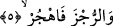
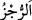

gelmek üzere şöyle der:
Hamdolsun ne giydim elbisesini bir günahkârın
Ne işledim ihanet, şimdi yüzümü kapayayım.
Yukardaki beyitte günahkâr ve hâin kelimelerinin geçmesi bir sebebe bağlıdır. O da
şudur; Hıyânet edenle günah işleyen kimseye “kirli elbiseli”, sözünde doğru olan ile
ahde vefa gösterenlere temiz elbiseli, denilirdi.
Nefahât’ta Şeyh Ebu’l-Hasan Şâzelî’den şöyle nakledilmektedir: Hz. Peygamber’i
rüyada gördüm. Bana: “Ey Ali, elbiseni pislikten temizle ki, her nefeste Allah Teâlâ’nın
yardım ve teyidinden faydalanabilesin.” dedi. “Yâ Rasûlallah, elbisem hangisidir?”
diye sordum. Buyurdu ki; “Allah sana beş hil’at giydirmiştir. Bunlar muhabbet, mârifet,
tevhîd, îman ve İslam hil’atleridir. Allah Teâlâ’yı seven kimseye her şey kolay olur.
Allah Teâlâ’yı tanıyıp anlayanın gözüne her şey değersiz görünür. Allah Teâlâ’nın
birliğine inanan kimse ona hiçbir şeyi ortak koşmaz. Allah’a îman eden kimse her
şeyden emin olur. İslam’la nitelenen kimse Allah’a isyan etmez. Eğer isyan etse istiğfar
eder, özür diler. Özür dilerse Allah’ın fazlı ve ihsanıyla özrü kabul edilir. Sonra Şeyh
buyurdu ki: Bütün bunlardan Allah’ın “Elbiseni temizle” buyruğunun mânâsını anladım.
Rûhânî sıfattan bir elbiseyi
Sana Allah’ın lütfu giydirdi
Elbiseni pislikten, gazap ve şehvetten uzak tut
Ki böylece temizliğinle meşhûr olasın.
5. Kötü şeyleri terket.
Âyette yer alan “/rucz” putlar demektir. “Terket” anlamına gelen “hecr” kelimesi
Müzzemmil sûresinde açıklanmıştı. Buna göre âyet-i kerîmenin mânâsı şöyle olur: “Sen
putlara tapmayı terket ve onlara yaklaşma.” Nitekim Hz. İbrahim (a.s.) Kur’an’ın diliyle
şöyle duâ ediyordu: “Beni ve oğullarımı putlara tapmaktan uzak tut.” (İbrahim,
14/35)
Bâzılarına göre “rucz” azap anlamınadır. Buna göre âyetin mânâsı; azâba götüren
günahları terkte sebat etmek sûretiyle azaptan uzak dur ve onu terket! Azâba götüren
günahlara “rucz” denilmesi, sonuca sebebin isim olarak verilmesi kabilindendir.
Peygamber Efendimiz’e (s.a.) “kötü şeyleri terket” şeklinde emir verilmesinden maksad
bu uzaklaşma ve terketme fiiline devam et demektir. Çünkü Peygamber (s.a.) Efendimiz
-zâten- putlara tapmaktan ve benzeri kötülükleri işlemekten uzaktı.